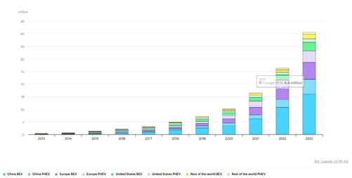

Word count: 958
Table of Contents |
|---|
| Abstract |
| Introduction |
| The Steam Engine |
| The Internal Combustion Engine |
| The Electric Motor |
| Hydrogen Vehicles |
| References |
In essence, the evolution of engines has significantly progressed the way society runs. From public transport to utilising vehicles for transportation of goods, one can say engines are vital to our lifestyles. This project examines how these engines have emerged and established themselves. Over time, these engines have developed in their functionalities and their mechanisms and this will also be discussed within this report. This project also mentions any important figures who have contributed to advancements within the automotive industry. Whilst there is appreciation for the variety of engines available, the aim of this article is to cover steam, internal combustion, electric and hydrogen engines as the four key types of engines. Their role in today’s day and age is explored and their possible implications. Furthermore, engines are constantly evolving so another objective of this article would be to outline future innovations for automotive engines.
Automotive engines/motors are an integral part of our day to day lives. Globally, 85.4 million motor vehicles were produced in 2022¹. In the UK, in fact, 74% of English residents aged 17 or over have a full driving license which is around 34.25 million people². As the number of drivers per year continues to rise, so does car production which has meant engines/motors are constantly evolving. This project aims to focus on different types of engines/motors, how they have improved, and their uses in today’s era. There is also an aim to outline the mechanisms of these engines/motors to provide an insight and delve deeper into the internal contraptions. The methodology of this project is to analyse reliable sources including peer-reviewed journal articles and resources from well-established organisations to ensure the validity of this article is optimal.
The steam engine is recognised by many as the first major engine. The first ever steam engine was invented by Thomas Newcomen in 1712³. Nicolas-Joseph Cugnot pioneered this technology for the automotive industry by applying this engine in self-propelled vehicles in 1769, as a military tractor⁴. According to the Engineering and Technology History Wiki (ETHW), the mechanism of his steam engine consisted of “a pair of cylinders mounted side by side at the front of the carriage to engage a pair of ratchet wheels on either side of a single drive wheel”⁵. Figure 1 depicts an early steam engine. Whilst the use of steam engines has decreased over time, this type of engine still remains pivotal to the evolution altogether.
A Belgian engineer by the name of Étienne Lenoir created the first practical internal combustion engine in 1860. An engine operating on a two-stroke principle which used cool gas as fuel. This struck a notable step forward in the development of engines. In 1876, Nikolaus Otto developed the first four-stroke internal combustion engine which sparked a breakthrough in internal combustion engine technology as we know it today. The “Otto engine” used a mixture of fuel and air. It initiated ignition by a spark plug (and this still remains the foundation for modern engines). Introducing the four-stroke cycle-intake, compression, power, and exhaust meant that its upgraded efficiency and reliability made it a remarkable addition to the industry⁶. Although these engines were created for industrial uses, they provided a stepping stone for advancements in the automotive industry and we can see that with Karl Benz’s application of internal combustion engines to transportation. An invention profoundly commended as the birth of the modern automobile was developed in 1885 by Benz. An automobile powered by gasoline consisting of Otto’s engine. Around the same time, in 1897, Rudolf Diesel invented the diesel engine, commonly used nowadays too⁷. Figure 2 represents a diagram of the diesel engine, with its 1 cylinder four stroke water cooled air injection of fuel. Hybrid vehicles are also a popular choice in today’s day and age and they combine the combustion engine’s skill of maintaining high speeds with the electric engine’s specialty of producing torque⁸. However, internal combustion engines have a flaw which is that environmentally they produce a large volume of air pollutants. Something crucial to keep in mind is that internal combustion engines are a public hazard but also severely damaging for our environment⁹.
A common misconception is that electric motors followed the invention of internal combustion engines. Internal combustion engines arrived into this market in 1860 and electric motors came into play in the 1830s and were developed by Robert Anderson using galvanic cell batteries to power the automobile¹⁰. Galvanic cells are not rechargeable and utilise redox (reduction and oxidation) reactions to charge the car¹¹. Thomas Davenport, an American blacksmith, is thought to have invented the first practical engine motor, utilising electromagnets with coils of wire around it¹². Electric vehicles (EVs) are particularly revolutionary in terms of meeting climate change targets, as they have many benefits, environmentally too. These benefits about EVs have existed as early as a century ago in efforts to highlight their fuel-saving ability and saving fossil fuel resources. Furthermore, EVs have advantages in terms of carbon emissions too as they are considered zero emission vehicles - which relates to improving local air quality and smog issues¹³. Additionally, as shown in figure 3, the trends of global electric car stock have rapidly increased¹⁴. In fact, nearly one in every five cars sold in 2023 was electric - and this trend is set to rise further as the public becomes more environmentally conscious, as well as with the roll out of laws mandating certain vehicles only. Regulations in place are the ULEZ (Ultra Low Emission Zone) in London, for example which is a daily charge you have to pay if your vehicle doesn’t meet the standards. Being able to drive without paying charges per day spotlights EVs and makes them more appealing and an ideal option to consumers looking for a new car¹⁵.
Another variation of EVs is hydrogen cars which some may know as FCEVs (Fuel Cell Electric Vehicles) in contrast to the BEVs (Battery Electric Vehicles) that we discussed above. The difference with hydrogen vehicles is that they produce electricity themselves, meaning that their power doesn’t come from a built-in battery like BEVs. Hydrogen powered vehicles are already in use at the moment and there is an expectation that its application will continue to rise due to the currently foreseen increase in hydrogen production worldwide which is projected to make the price per kilogram of hydrogen fall from 14 euros to around 4 to 6 euros by 2030. Hydrogen’s low cost combined with its high driving range demonstrates its potential to be a strong contender in the automotive world.¹⁶
(1) ACEA (2021). World motor vehicle production – ACEA – European Automobile Manufacturers’ Association. [online] ACEA - European Automobile Manufacturers’ Association. Available at: https://www.acea.auto/figure/world-motor-vehicle-production/ , Last accessed: (27/11/2024)
(2) RAC Foundation (2018). General facts and figures about roads and road use. [online] Racfoundation.org. Available at: https://www.racfoundation.org/motoring-faqs/mobility , Last accessed: (27/11/2024)
(3) Crawford, J. (2017). The Newcomen steam engine. [online] The Roots of Progress. Available at: https://blog.rootsofprogress.org/the-newcomen-steam-engine , Last accessed: (27/11/2024)
(4) Mary Bellis (2016). The First Cars Were Powered by Steam! [online] ThoughtCo. Available at: https://www.thoughtco.com/history-of-steam-powered-cars-4066248 , Last accessed: (27/11/2024)
(5) ETHW (2015). Cugnot’s Fardier - Engineering and Technology History Wiki. [online] ETHW. Available at: https://ethw.org/Cugnot%27s_Fardier [Accessed 27 Nov. 2024] , Last accessed: (27/11/2024)
(6) O’Cean, J. (2023). A brief history of the internal combustion engine. [online] Enthusiasts of British Motor Vehicles Built Before 1985. Available at: https://www.britishmotorvehicles.com/blogs/a-brief-history-of-the-internal-combustion-engine , Last accessed: (28/11/2024
(7) Jääskeläinen, H. (2019). Early History of the Diesel Engine. [online] dieselnet.com. Available at: https://dieselnet.com/tech/diesel_history.php , Last accessed: (28/11/2024)
(8) George (2019). The Evolution of The Internal Combustion Engine. [online] Carnot. Available at: https://carnotengines.com/evolution-of-internal-combustion-engines/ , Last accessed: (28/11/2024)
(9) Majewski, W.A. (n.d.). Health and Environmental Effects. [online] dieselnet.com. Available at: https://dieselnet.com/tech/emissions_effects.php , Last accessed: (28/11/2024)
(10) Wilson, K. (2023). The Electric Car’s History Goes Back Further Than You Think. [online] Car and Driver. Available at: https://www.caranddriver.com/features/g43480930/history-of-electric-cars/ , Last accessed: (28/11/2024)
(11) Chieh, C. (2015). Galvanic Cells. [online] Chemistry LibreTexts. Available at: https://chem.libretexts.org/Bookshelves/Analytical_Chemistry/Supplemental_Modules_(Analytical_Chemistry)/Electrochemistry/Basics_of_Electrochemistry/Electrochemistry/Galvanic_Cells , Last accessed: (28/11/2024)
(12) Raphael (2024). A Journey Through the History of Electric Motors. [online] Gibbons Group. Available at: https://www.gibbonsgroup.co.uk/media/blog/a-journey-through-the-history-of-electric-motors/ , Last accessed: (28/11/2024)
(13) Haghani, M., Sprei, F., Kazemzadeh, K., Shahhoseini, Z. and Aghaei, J. (2023). Trends in electric vehicles research. Transportation Research Part D: Transport and Environment, [online] 123, pp.103881–103881. doi:https://doi.org/10.1016/j.trd.2023.103881 , Last accessed: (28/11/2024)
(14) International Energy Agency (2024). Trends in electric cars. [online] IEA. Available at: https://www.iea.org/reports/global-ev-outlook-2024/trends-in-electric-cars , Last accessed: (28/11/2024)
(15) Transport for London (2024). Ultra Low Emission Zone. [online] Transport for London. Available at: https://tfl.gov.uk/modes/driving/ultra-low-emission-zone , Last accessed: (28/11/2024)
(16) BMW (2019). Hydrogen fuel cell cars: what you need to know | BMW.com. [online] Bmw.com. Available at: https://www.bmw.com/en/innovation/how-hydrogen-fuel-cell-cars-work.html , Last accessed: (28/11/2024)